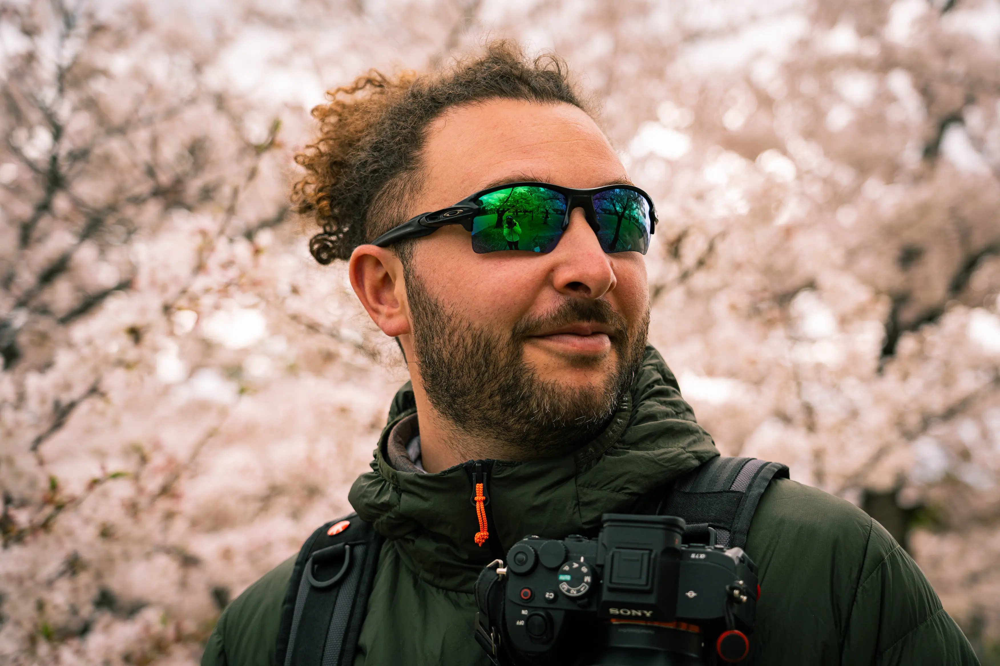

Daniele Vallauri
Chi Sono
La fotografia per me è prima di tutto curiosità e scoperta.
Mi ha sempre affascinato la possibilità di osservare ciò che mi circonda da prospettive diverse e trasformare quello che vedo in un'immagine.
Amo particolarmente il paesaggio, la natura e la macrofotografia, ma non mi piace definire il mio modo di fotografare attraverso un unico genere.
Mi piace sperimentare, provare tecniche nuove e avvicinarmi a generi che ancora non conosco. Credo che una delle parti più belle della fotografia sia proprio non sentirsi mai arrivati: c'è sempre qualcosa da imparare, un nuovo modo di osservare o un'idea da trasformare in un progetto.
Anche il viaggio fa parte di questo percorso. Scoprire nuovi luoghi significa incontrare atmosfere, dettagli e situazioni diverse, ma soprattutto avere continuamente nuovi stimoli. Porto con me la macchina fotografica non solo per conservare un ricordo, ma per cercare il mio modo di raccontare ciò che incontro.
Continuare a sperimentare, imparare e mettermi in gioco è ciò che mantiene viva la mia passione per la fotografia.

Mi ha sempre affascinato la possibilità di osservare ciò che mi circonda da prospettive diverse e trasformare quello che vedo in un'immagine.
Amo particolarmente il paesaggio, la natura e la macrofotografia, ma non mi piace definire il mio modo di fotografare attraverso un unico genere.
Mi piace sperimentare, provare tecniche nuove e avvicinarmi a generi che ancora non conosco. Credo che una delle parti più belle della fotografia sia proprio non sentirsi mai arrivati: c'è sempre qualcosa da imparare, un nuovo modo di osservare o un'idea da trasformare in un progetto.
Anche il viaggio fa parte di questo percorso. Scoprire nuovi luoghi significa incontrare atmosfere, dettagli e situazioni diverse, ma soprattutto avere continuamente nuovi stimoli. Porto con me la macchina fotografica non solo per conservare un ricordo, ma per cercare il mio modo di raccontare ciò che incontro.
Continuare a sperimentare, imparare e mettermi in gioco è ciò che mantiene viva la mia passione per la fotografia.